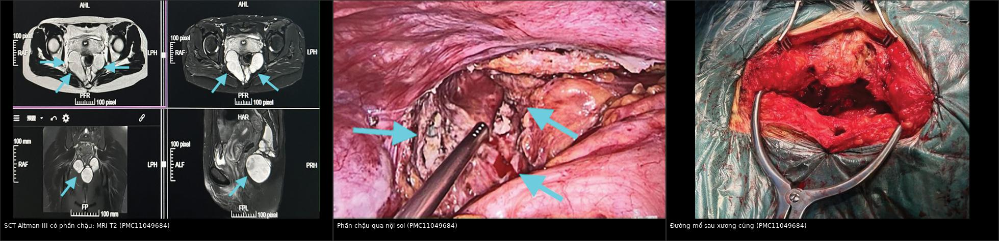
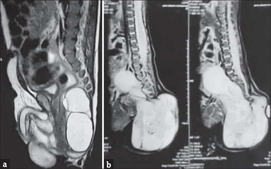
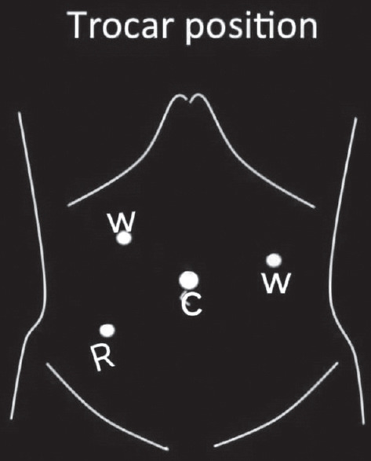

1701 — Đường mổ u quái cùng cụt: sau–qua xương cùng vs nội soi ổ bụng hỗ trợ / Surgical approach to sacrococcygeal teratoma
Tags: pattern:khoi-truoc-xuong-cung pattern:u-nang-da-khoang vung:cung-cut score:Altman protocol:MRI-chau protocol:AFP incidentaloma:khong
Mức chắc chắn (certainty): tổng hợp y văn (literature synthesis) — ghép loạt 95 ca đa trung tâm (PMC10506197), loạt 7 ca nội soi hỗ trợ (PMC11968056), 1 ca Altman III người lớn có đủ ảnh (PMC11049684) và 1 ca type IV sơ sinh (PMC13227553). Số liệu lấy từ toàn văn, không suy diễn ngoài nguồn.
1. Tổng hợp bệnh học – cơ chế hình ảnh
Bệnh học. U quái cùng cụt (sacrococcygeal teratoma — SCT) phát sinh từ nút Hensen ở xương cụt, chứa đủ 3 lá phôi. Đây là u hay gặp nhất ở sơ sinh với tần suất 1/40.000 trẻ sinh sống, ưu thế nữ rõ (74/95 ca trong loạt Ai Cập), 18% có dị tật phối hợp (PMC10506197). Vì u xuất phát từ xương cụt, cắt bỏ xương cụt là bắt buộc — cả 95 ca trong loạt đều cắt u kèm xương cụt — nếu để lại xương cụt thì tái phát.
Vì sao phải mổ sớm và trọn: nguy cơ ác tính hóa (thành phần yolk sac), vỡ u khi u lớn, chảy máu, và chèn ép trực tràng/bàng quang. Tỷ lệ mô bệnh lành (mature) 82%; tái phát tại chỗ 8,5% ở theo dõi trung vị 57 tháng, sống 5 năm 94%, sống không biến cố 91% (PMC10506197).
Cơ chế hình ảnh — TẠI SAO tín hiệu như vậy:
- Nang dịch trong u → T2 rất sáng (nước tự do), T1 tối; nhiều nang kích thước khác nhau tạo hình đa thùy ("dough sign" trên siêu âm, "short line sign" khi có vách) — ca người lớn PMC11049684 mô tả đúng các dấu này.
- Mỡ trưởng thành → T1 sáng, T2 sáng, mất tín hiệu trên T1 fat-sat — dấu hiệu của u quái trưởng thành, giúp phân biệt với nang đơn thuần.
- Vôi hóa → tối trên mọi chuỗi xung, nhạy nhất trên CT; là dấu hiệu mạnh của u quái (không có trong nang thần kinh màng não trước cùng).
- Máu – đạm cao → T1 sáng, T2 trung bình; mức dịch–dịch khi có chảy máu nhiều đợt.
- Phần đặc → T2 trung gian, ngấm thuốc; phần đặc lớn, không đều, kèm AFP cao gợi ý thành phần ác tính (yolk sac).
- Vì sao phải xem ống sống: u có thể lan trong ống sống (intradural) hoặc kèm meningocele trước cùng — chọc/dẫn lưu nhầm nang thần kinh màng não gây viêm màng não; MRI là bắt buộc trước mổ.
Ngưỡng và số liệu quyết định:
| Chỉ số | Số liệu | Nguồn |
|---|---|---|
| Tần suất | 1/40.000 trẻ sinh sống; nữ 74/95 | PMC10506197 |
| Phân bố Altman | 74,7% type I/II | PMC10506197 |
| Đường mổ trong thực hành | 75/95 (79%) đường tầng sinh môn; 20/95 (21%) phối hợp bụng–tầng sinh môn | PMC10506197 |
| Mô bệnh | mature 82%; tái phát tại chỗ 8,5% (trung vị 57 tháng); y văn 2–35% | PMC10506197 |
| Di chứng chức năng | tiết niệu 7,4% (5 ca Altman III, 2 ca IV); táo bón/đại tiện 12,6% (8 ca III, 4 ca II) | PMC10506197 |
| Kết cục sau mổ | sống 5 năm 94%, EFS 91% | PMC10506197 |
| Nội soi hỗ trợ (n = 7) | mổ 2,7 giờ (2–3,15 giờ); không chảy máu trong mổ; nằm viện trung vị 7 ngày; không tiểu/đại tiện không tự chủ | PMC11968056 |
2. Mẫu hình + chẩn đoán phân biệt theo vị trí (gamut)
Mẫu hình: khối vùng cùng cụt ở sơ sinh/nhũ nhi, có thể thấy được từ ngoài hoặc chỉ thấy trong khung chậu, thường đa nang, có thành phần mỡ/vôi hóa. Việc chọn đường mổ không dựa vào kích thước tuyệt đối mà dựa vào tỷ lệ phần ngoài / phần trong khung chậu — chính là phân loại Altman:
- Altman I: chủ yếu ngoài, phần trước xương cùng nhỏ.
- Altman II: khối ngoài rõ + phần trong khung chậu đáng kể.
- Altman III: khối ngoài nhỏ nhưng phần lớn nằm trong khung chậu.
- Altman IV: hoàn toàn trước xương cùng, không thấy khối ngoài (dễ chẩn đoán muộn vì chỉ có bí tiểu/táo bón/khối bụng).
Gamut theo khoang (khoang quyết định đường mổ):
- Khoang dưới cơ nâng (dưới sàn chậu): SCT type I, lipoma, u mạch.
- Khoang trước xương cùng trên cơ nâng: SCT type II–IV, nang thần kinh màng não trước cùng (anterior sacral meningocele), nang đuôi (tailgut cyst), trùng lặp trực tràng, u quái trưởng thành, u nguyên bào men.
- Trong ống sống: lipomyelomeningocele, SCT lan trong màng cứng.
- Xương cùng: chordoma (người lớn), di căn, bất sản xương cùng/Currarino (kèm nang trước cùng + dị tật hậu môn trực tràng).
Mnemonic "5 nang trước xương cùng" — SCT, Meningocele, Tailgut cyst, Duplication trực tràng, Anterior sacral meningocele (trùng M) — điểm chung là đều là khối dịch T2 sáng; chốt phân biệt bằng vôi hóa/mỡ (SCT), lỗ rò ra da (meningocele), vách mỏng không vôi (tailgut).
3. Bảng so sánh phân biệt (ma trận đối chiếu)
| Thực thể (entity) | Hình ảnh điển hình | Chốt vào (rule-in) | Chốt loại (rule-out) | Gợi ý xác nhận |
|---|---|---|---|---|
| SCT Altman I | Khối ngoài, đa nang ± mỡ ± vôi hóa; phần trước xương cùng nhỏ | Khối ngoài + vôi hóa/mỡ + cuống từ xương cụt | Khối hoàn toàn trong khung chậu (→ type III/IV) | MRI + AFP, mổ đường sau là đủ |
| SCT Altman II | Khối ngoài lớn + phần chậu vừa, đẩy trực tràng ra trước | Phần ngoài ≥ phần chậu + mặt phẳng cắt qua cơ nâng thấy u | Không có phần ngoài (→ type IV) | MRI sagittal; nội soi hỗ trợ khi phần chậu lớn |
| SCT Altman III | Khối ngoài nhỏ, phần lớn trong khung chậu, đè bàng quang/trực tràng | Phần chậu > phần ngoài, u vượt qua cơ nâng | Chỉ có khối ngoài (→ type I) | MRI + nội soi ổ bụng đánh giá phần trên |
| SCT Altman IV | Không khối ngoài; khối đa nang trước xương cùng, có thể lan ống sống | Khối hoàn toàn trước cùng + AFP ± tăng | Có khối ngoài (→ type I–III) | MRI toàn trục + CT xương cùng |
| Nang thần kinh màng não trước cùng | Nang dịch thông với ống sống qua lỗ xương cùng, bờ xương cùng gặm mòn | Thấy cổ thông với ống sống trên MRI/CT myelography | Không thông ống sống + có vôi hóa → SCT | MRI T2 sagittal + CT; không chọc |
| Nang đuôi (tailgut cyst) | Nang đơn/đa thùy, vách mỏng, không vôi hóa, không mỡ, thường ở người lớn | Nang sạch, không thành phần u quái | Có mỡ/vôi hóa → SCT | MRI + mô bệnh sau cắt |
| Trùng lặp trực tràng | Cấu trúc dạng ống có thành ruột, song song trực tràng | Thành có lớp cơ, đồng tín hiệu với ruột | Không có thành ruột → nang khác | MRI, nội soi trực tràng |
| U quái ác tính/yolk sac | Phần đặc lớn, ngấm thuốc, xâm lấn; AFP rất cao | AFP tăng + phần đặc lớn | AFP bình thường + u đa nang thuần → lành | AFP, mô bệnh, hóa trị platinum |
| Currarino | Bất sản xương cùng hình liềm + nang trước cùng + dị tật hậu môn | Tam chứng trên phim/ MRI | Không có bất sản xương cùng | MRI + X-quang cùng cụt |

Trái: MRI T2 nhiều mặt phẳng — khối đa nang trước xương cùng, đẩy trực tràng ra trước. Giữa: phần khung chậu nhìn qua nội soi. Phải: đường mổ sau xương cùng hình chữ Y ngược. Nguồn: Medicine (Baltimore) 2024;103(17):e37887 (PMC11049684), CC BY 4.0. Ảnh ghép letterbox, giữ nguyên tỷ lệ.Ba dấu hiệu quyết định đường mổ
- Dấu "eo trên cơ nâng" (levator waist): trên MRI sagittal, đoạn u thắt lại khi qua cơ nâng — nếu u chỉ nằm dưới cơ nâng thì đường sau đơn thuần đủ; nếu u vượt lên trên thì phải tính đường bụng/nội soi.
- Dấu "đẩy trực tràng": trực tràng bị đẩy ra trước và dẹt — mức độ đẩy phản ánh thể tích phần chậu, quyết định có cần nội soi hay không.
- Dấu "mất liên tục xương cùng": gợi ý meningocele/Currarino — chống chỉ định chọc hút và phải mổ có phối hợp thần kinh ngoại.
4. Protocol chụp + hệ phân độ/điểm chuẩn hóa
4.1 Protocol hình ảnh và xét nghiệm
- Trước sinh: siêu âm hình thái; MRI thai khi u lớn, có thành phần đặc, hoặc nghi suy tim thai do shunt.
- Sau sinh: siêu âm qua tầng sinh môn/bụng (đo nang, mỡ, vôi hóa) → MRI chậu – cùng cụt (T1, T2, T1 fat-sat, ± đối quang; cắt qua toàn bộ ống sống để loại trừ lan màng cứng).
- CT xương cùng khi MRI không rõ vôi hóa/bất sản xương cùng, hoặc để quy hoạch cắt xương cụt.
- AFP huyết thanh trước mổ (baseline) — tăng gợi ý thành phần yolk sac; theo dõi AFP sau mổ là chỉ dấu tái phát ác tính.
- Đánh giá chức năng trước mổ: siêu âm thận, bàng quang; hỏi táo bón/bí tiểu; không cần niệu động học thường quy.
4.2 Phân loại Altman = công cụ chọn đường mổ
| Altman | Vị trí | Đường mổ chuẩn | Ghi chú |
|---|---|---|---|
| I | Chủ yếu ngoài | Đường sau xương cùng (đường giữa hoặc chữ V/chevron) | Cắt u + xương cụt; đóng cân – da 2 lớp |
| II | Ngoài + phần chậu | Đường sau ± nội soi hỗ trợ | Nội soi khi phần chậu lớn, u vượt cơ nâng |
| III | Phần lớn trong chậu, ngoài nhỏ | Nội soi ổ bụng + đường sau xương cùng | Nội soi giải phóng phần trên, kiểm soát động mạch cùng giữa |
| IV | Hoàn toàn trước cùng | Đường bụng (mở/nội soi) ± đường sau | Nguy cơ lan ống sống; phối hợp ngoại thần kinh khi cần |
4.3 Kỹ thuật then chốt (loạt 7 ca nội soi hỗ trợ)
- Tư thế: nằm ngửa cho phần nội soi, sau đó đổi tư thế sấp cho đường sau.
- 4 trocar: 1 trocar camera rốn, 2 trocar 5 mm cạnh trực tràng, 1 trocar 5 mm hố chậu phải; CO₂ 10–12 mmHg.
- Bước quan trọng: khâu treo tử cung (bé gái) hoặc bàng quang (bé trai) và trực tràng vào thành bụng trước để mở rộng khoang sau trực tràng; bộc lộ và cắt động mạch cùng giữa (median sacral artery); bảo tồn đám rối thần kinh trước cùng bằng cách bám sát vỏ u; giải phóng u bằng điện đơn cực/dao siêu âm.
- Sau đó: đường sau xương cùng lấy trọn u + xương cụt, đóng cân – da, dẫn lưu.
- Số liệu loạt 7 ca: mổ 2,7 giờ; không truyền máu; 71,43% ăn lại bình thường trong 3 ngày; nằm viện trung vị 7 ngày; 2 ca hở vết mổ tầng sinh môn (điều trị tại chỗ); không ca nào tiểu/đại tiện không tự chủ. Hạn chế: n = 7, không có nhóm chứng, thời gian theo dõi ngắn — không được kết luận nội soi ưu thế tuyệt đối so với mổ mở.
4.4 Theo dõi sau mổ
- AFP + siêu âm mỗi 3 tháng trong năm đầu, MRI ở 6 tháng; sau đó hàng năm đến hết tuổi dậy thì (tái phát muộn đã được báo cáo tới 13% ở 5 năm).
- Đánh giá chức năng: hỏi tiểu/đại tiện mỗi lần khám; niệu động học khi có triệu chứng; nguy cơ cao hơn ở Altman III/IV — tư vấn trước mổ.
flowchart TD
A[Khối vùng cùng cụt ở sơ sinh] --> B[Siêu âm + MRI chậu và ống sống]
B --> C[Xác định Altman + loại trừ meningocele]
C --> D{Altman}
D -->|I| E[Đường sau xương cùng]
D -->|II| F[Đường sau ± nội soi hỗ trợ]
D -->|III| G[Nội soi ổ bụng + đường sau]
D -->|IV| H[Đường bụng ± đường sau]
E --> I[Cắt trọn u + xương cụt]
F --> I
G --> I
H --> I
I --> J{AFP cao hoặc mô bệnh ác?}
J -->|Có| K[Hóa trị platinum + theo dõi sát]
J -->|Không| L[AFP + MRI định kỳ đến dậy thì]
5. Biến thể bình thường và cạm bẫy
Biến thể bình thường / lành tính dễ nhầm:
- Nang cùng cụt đơn thuần (sacrococcygeal cyst) ở da: không thông ống sống, không có mỡ/vôi hóa bên trong.
- Mỡ cùng cụt (sacral lipoma) không có thành phần nang — T1 sáng đồng nhất, mất tín hiệu fat-sat.
- U quái trưởng thành hoàn toàn nang (type IV) có thể chỉ là một nang đơn thuần 7,0 × 3,9 cm ở sơ sinh và được xử lý nội soi hỗ trợ (PMC13227553) — nhưng vẫn phải cắt xương cụt.
Cạm bẫy (pitfall):
- Bỏ sót xương cụt: tái phát 2–35%; đây là lỗi kỹ thuật hay gặp nhất và phòng được.
- Vỡ u/thành u tràn trong mổ: làm tăng tái phát — thao tác en bloc, không chọc hút u để "thu nhỏ".
- Chọc hút nang thần kinh màng não trước cùng: viêm màng não, rò dịch não tủy — luôn xem ống sống trên MRI.
- Đọc Altman thấp hơn thực tế: khối ngoài to che mất phần chậu (type III bị gọi là I) → mổ đường sau không lấy hết phần trên, tái phát; luôn cắt MRI sagittal qua cơ nâng.
- Tổn thương thần kinh trước cùng: rối loạn cương, bí tiểu, táo bón — bám sát vỏ u, không cắt rộng mô thần kinh.
- Động mạch cùng giữa: nguồn chảy máu chính khi u lớn; cần xác định và cắt có kiểm soát.
- Hạ thân nhiệt và mất máu ở sơ sinh: u lớn có thể chứa vài trăm mL; chuẩn bị máu, làm ấm phòng mổ.
- Đóng da căng sau cắt u lớn: hở vết mổ (2/7 ca trong loạt nội soi) — cân nhắc chuyển vạt/đóng đường giữa có kế hoạch.
- Người lớn có khối trước cùng: gamut khác (chordoma, tailgut, GIST) — không mặc định là SCT dù mô bệnh sau mổ là u quái.
6. Tự lượng giá — Blind Quiz
Ca 1 — Sơ sinh 56 ngày, khối vùng cùng cụt. Nhìn MRI, phân loại Altman trước rồi mới mở đáp án.

- Gợi ý lâm sàng: khối thấy rõ từ ngoài, không liệt chi dưới.
- Câu hỏi: (a) và (b) là Altman type nào? Dấu hiệu nào quyết định? Đường mổ tương ứng?
Bấm để hiện đáp án (findings + chẩn đoán)
- Dấu hiệu: (a) khối chủ yếu trong khung chậu, phần ngoài nhỏ → Altman III; (b) khối ngoài lớn kèm phần trước xương cùng → Altman II.
- Chốt: tỷ lệ phần ngoài/phần chậu trên MRI sagittal và việc u có vượt qua cơ nâng hay không.
- Đường mổ: III → nội soi ổ bụng + đường sau xương cùng; II → đường sau ± nội soi hỗ trợ; luôn cắt xương cụt.
- Nguồn ảnh: J Indian Assoc Pediatr Surg 2025;30(2):215–219 (PMC11968056), CC BY-NC-SA 4.0.
Ca 2 — Cùng bệnh nhân Altman III. Ảnh dưới đây cho thấy gì và vì sao phải làm cả hai thì?
- Gợi ý: u đa nang, đẩy trực tràng ra trước, phần ngoài nhỏ.
- Câu hỏi: Thứ tự hai thì? Cấu trúc nào phải kiểm soát và bảo tồn? Đường rạch da nào hay được dùng?
Bấm để hiện đáp án
- Dấu hiệu: MRI T2 — khối đa nang trước xương cùng, đẩy trực tràng; nội soi — phần chậu nằm sau trực tràng; đường mổ — rạch da hình chữ Y ngược cạnh xương cùng.
- Thứ tự: thì bụng (nội soi) trước để giải phóng phần trên và kiểm soát động mạch cùng giữa, rồi thì sau xương cùng lấy trọn u + xương cụt.
- Bảo tồn: đám rối thần kinh trước cùng và niệu quản; khâu treo trực tràng/tử cung – bàng quang vào thành bụng để mở khoang.
- Nguồn ảnh: Medicine (Baltimore) 2024;103(17):e37887 (PMC11049684), CC BY 4.0. Ảnh ghép letterbox.
Ca 3 — Bố trí trocar dưới đây dùng cho bước nào, và vì sao lại đặt trocar như vậy?

- Gợi ý: bệnh nhi 8 ngày–1,5 tuổi; u Altman II–III.
- Câu hỏi: 4 trocar nằm ở đâu? Vì sao cần treo trực tràng? Nguy cơ chính của thì nội soi?
Bấm để hiện đáp án
- Bố trí: 1 trocar camera ở rốn, 2 trocar 5 mm cạnh trực tràng (trái/phải), 1 trocar 5 mm hố chậu phải; bơm CO₂ 10–12 mmHg.
- Vì sao treo trực tràng: kéo trực tràng lên thành bụng trước để mở rộng khoảng sau trực tràng, giúp bộc lộ u và động mạch cùng giữa an toàn.
- Nguy cơ: chảy máu từ động mạch cùng giữa, tổn thương thần kinh trước cùng, tràn khí/hạ thân nhiệt ở sơ sinh; trong loạt 7 ca không có chảy máu trong mổ và không tiểu/đại tiện không tự chủ.
- Nguồn ảnh: J Indian Assoc Pediatr Surg 2025;30(2):215–219 (PMC11968056), CC BY-NC-SA 4.0.
Bài liên quan chéo
- 680 – U quái cùng cụt: chẩn đoán, phân loại Altman, nguy cơ ác tính & AFP — bài nền về chẩn đoán; bài này trả lời mổ đường nào.
- 674 – U quái tế bào mầm gan ở trẻ — cùng nhóm u tế bào mầm, khác vị trí và cách theo dõi AFP.
- 673 – Chuyển tiếp người lớn – spina bifida – bàng quang thần kinh — theo dõi chức năng tiết niệu dài hạn.
- 672 – Biến chứng muộn sau tái tạo bàng quang — xử trí khi có bí tiểu/tiểu không tự chủ sau mổ.
- 646 – Hội chứng khoang bụng ở trẻ — biến chứng áp lực sau mổ lớn ở sơ sinh.
- 1681 – Di chứng muộn niệu–sinh dục ở bé gái sau chấn thương khung chậu — bảo tồn chức năng vùng chậu, đối chiếu cách tiếp cận khung chậu ở trẻ.
- 1705 – Theo dõi tiết niệu – đại tiện dài hạn sau cắt u quái cùng cụt — sau mổ: LUTD 19,6%, bàng quang thần kinh, tủy bám thấp, bậc thang TAI → ACE.
Ảnh
1701_u-quai-cung-cut_MRI-PMC11049684-Fig4.jpg— MRI T2 đa mặt phẳng, u đa nang trước xương cùng (CC BY 4.0).1701_u-quai-cung-cut_noi-soi-PMC11049684-Fig5.jpg— phần khung chậu nhìn qua nội soi (CC BY 4.0).1701_u-quai-cung-cut_duong-mo-PMC11049684-Fig8.jpg— đường mổ sau xương cùng hình chữ Y ngược (CC BY 4.0).1701_u-quai-cung-cut_MRI-Altman-PMC11968056-Fig2.jpg— MRI Altman III (a) và II (b) (CC BY-NC-SA 4.0).1701_u-quai-cung-cut_so-do-cong-PMC11968056-Fig3.jpg— sơ đồ 4 trocar (CC BY-NC-SA 4.0).composite_1701_MRI-noi-soi-duong-mo.jpg— ảnh ghép letterbox từ 3 ảnh cùng bài PMC11049684.
Không dùng để chẩn đoán độc lập khi chưa có người hướng dẫn.